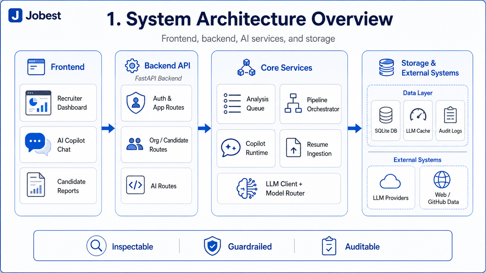
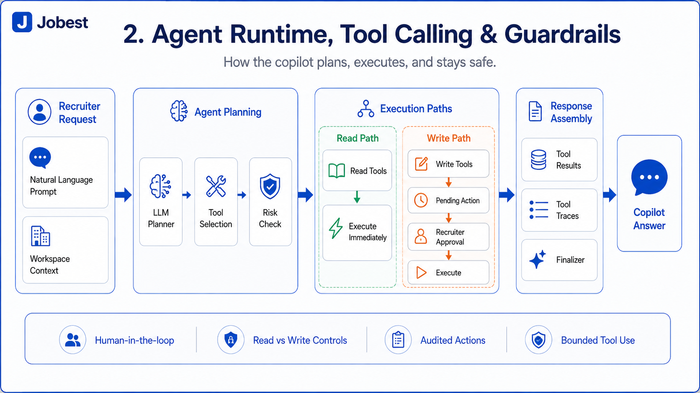
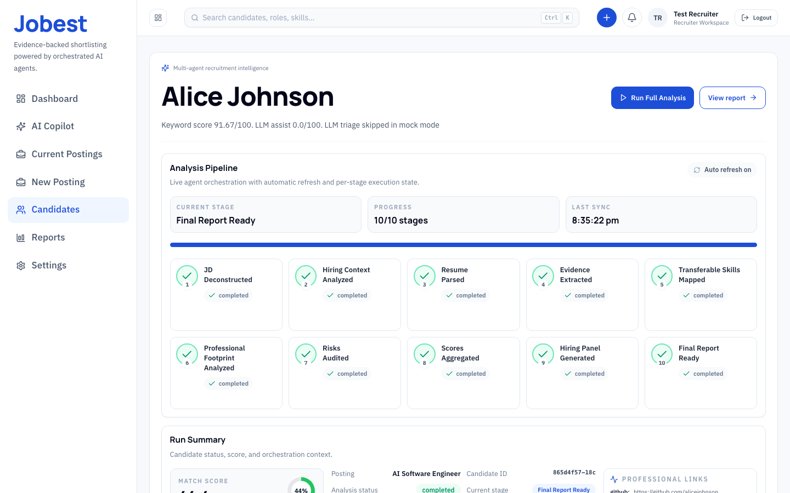
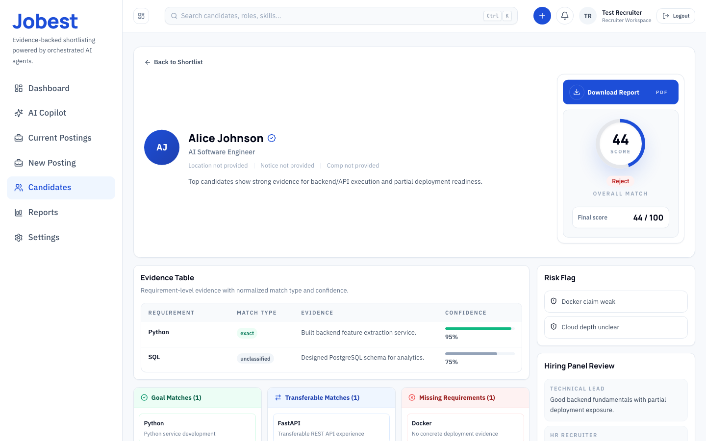
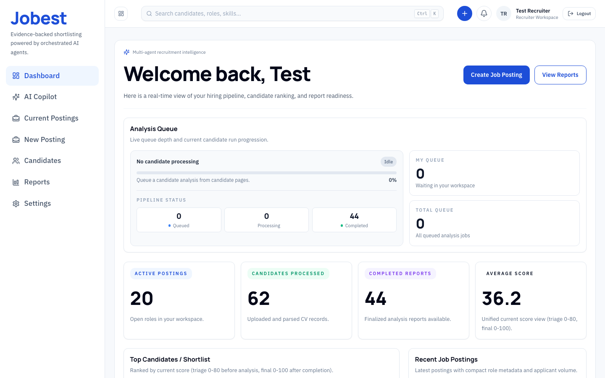

Evidence-backed shortlisting.
Intelligent recruiter
Recruiters need trust, not another score
Ranking is easy. Decision-making needs evidence.
Most hiring tools stop at the ranking.
Recruiters still need evidence, context, and control.
Shift from rank and guess to see why and decide.
One workflow from job post to shortlist
A recruiter copilot, not a generic chatbot.
01 Create role context
Role, priorities, must-haves.
02 Collect and triage candidates
Upload resumes. Rank the pool fast.
03 Run multi-agent analysis
Evidence, footprint, risk, report.
04 Act with recruiter control
Compare, question, shortlist, decide.


Built UI, not concept art
Dashboard, report view, and authenticated recruiter workspace already exist.



From intake to shortlist in one explainable system.
Evidence
Verifiable proof and footprints behind every score, eliminating black-box guessing.
Orchestration
Multi-agent pipelines handling PDF triaging, risk auditing, and report generation.
Control
Recruiter-in-the-loop validation with interactive copilot chats and actions.
Evidence-backed shortlisting.
Intelligent recruiter